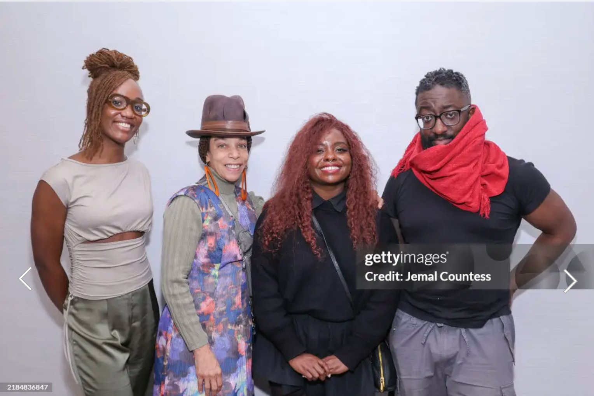
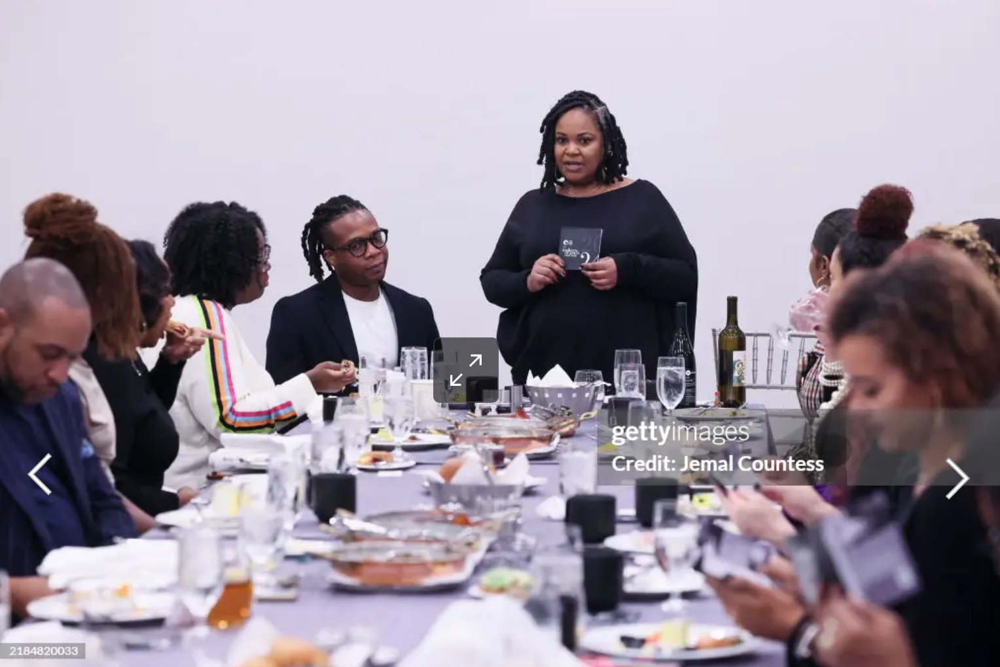
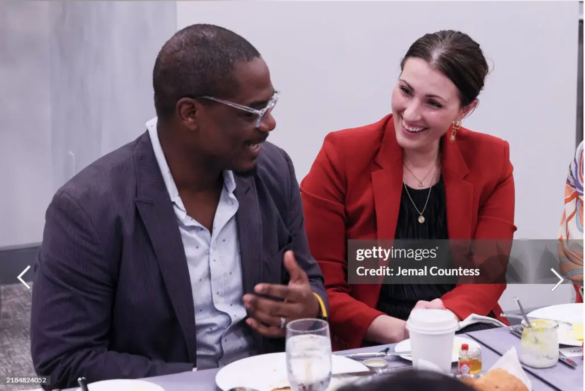
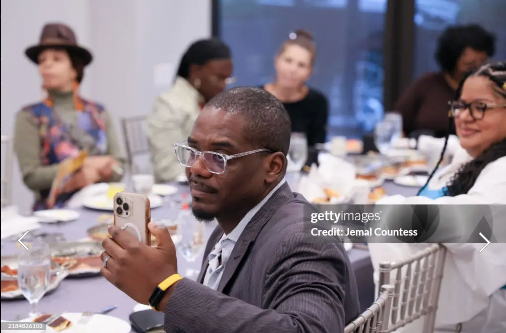
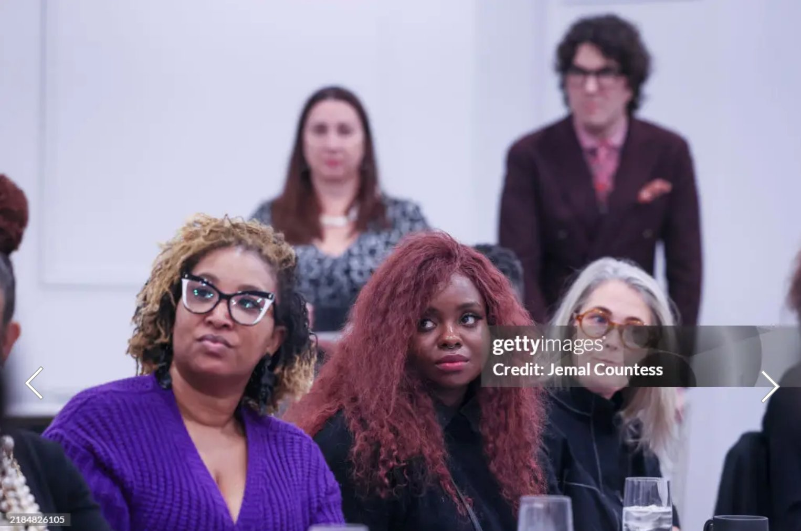
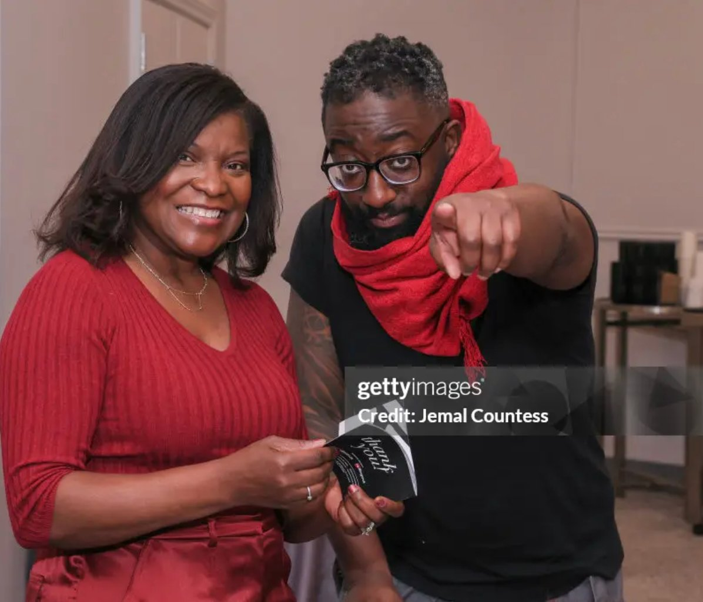

Case Study · April 2024 – December 2025
Building BPM's Events &
Sponsorship Infrastructure
Taking Black Public Media from no sponsorship infrastructure to $75K+ in partnerships, billions of media impressions, and a 9,900% increase in Giving Tuesday donations.
The Work
No infrastructure. No budget.
A misaligned playbook.
Starting from zero — with a deadline already in sight
Black Public Media had less than six months to establish presence at Torrents DC and Miami Art Week 2025 with no sponsorship framework, no dedicated budget, and no marketing materials capable of attracting partners.
The deeper challenge was a fundamental misalignment: leadership expected to be paid for participation at art fairs when industry standards required investment. Closing that gap was as important as any tactical deliverable.
Build proof of concept. Then the infrastructure.
These events were positioned as proof of concepts — designed to generate the data, impressions, and relationship capital that would unlock Fortune 500 sponsorships down the road. Short-term events in service of a long-term pipeline.
Every partnership was pursued with a dual lens: immediate value for the current activation, and a data point for the next pitch.
Work Delivered
Five activations.
One organizational transformation.
Sizzle Reel
Miami Art Week 2024
Two-Day Recap
BPM's first-ever sizzle reel, produced in partnership with a Fulbright NGO Fellow — capturing the Prizm Art Fair screening room activation and maker programming across Miami Art Week.
Event Photography
Makers Brunch
Washington, DC
Photography by Jemal Countess · Getty Images Entertainment · Makers Brunch Series, Washington DC 2024






Photography: Jemal Countess / Getty Images Entertainment
Partners & Collaborators
Who we worked with
"The makers were always the asset. The work was building the infrastructure worthy of what they'd already created."
Impact